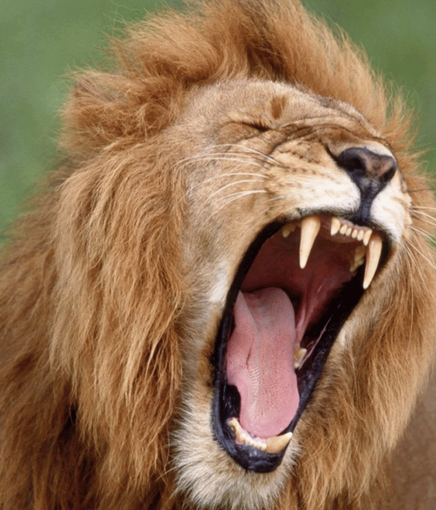

This is old Ninny's tomb. Where is my love?
RARRRRRRRRR
(Flute runs off)
POOR LION, HE SEEMS TO BE UPSET BECAUSE SOMETHING IS IN HIS MOUTH
But wait for what I got on another Kentmistry quiz...
Hint: 4.5/9
